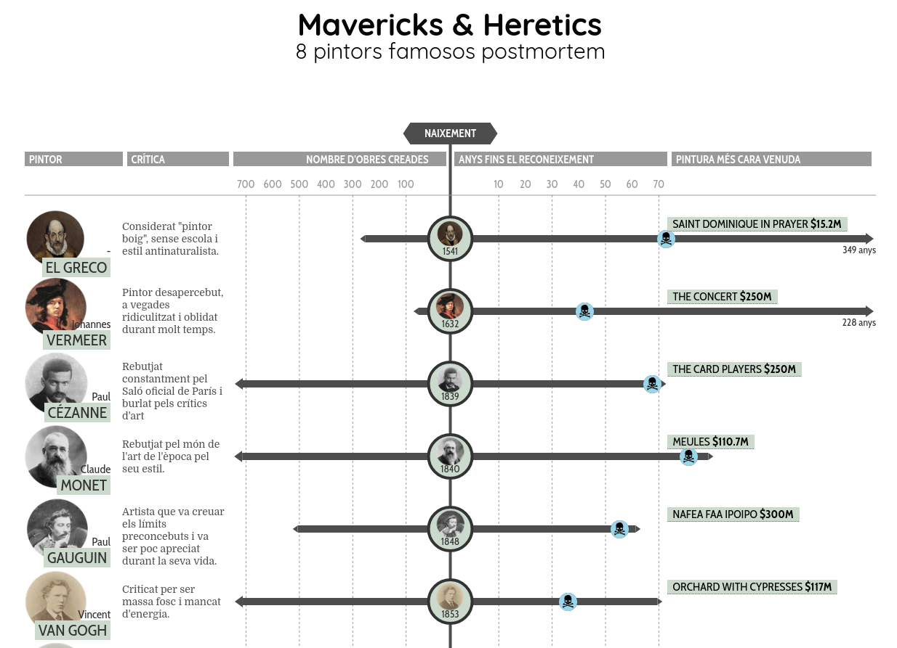

Representació de dades biogràfiques. Temps: fracàs - reconeixement - èxit.
Tema històric. Michael R. Dietrich
Visualització: David McCandless i el seu equip l'any 2017, (https://informationisbeautiful.net/visualizations/mavericks-and-heretics/).

Dades biogràfiques, invents, característiques (utils/inutils) de l'evolució biològica, fake news o teories de la conspiració.
Visualitzacions interessants de personatges.
Informació restringida i limitada.
Dades: Pintors famosos postmortem
Eines: VS code, (HTML, CSS, JS)
Seguint el consell d'Enrico Bertini, he ROBAT la idea de Information is Beautiful i he partit de la plantilla de la seva web. (Neteja exhaustiva i adaptació a les meves dades)
Val a dir que pel camí he perdut la responsiveness de la web.
